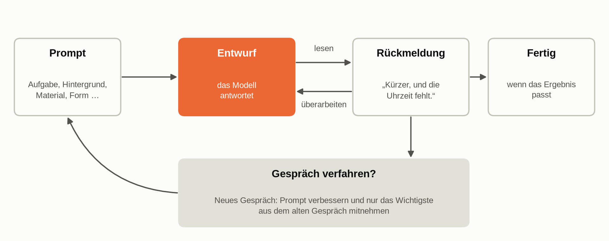
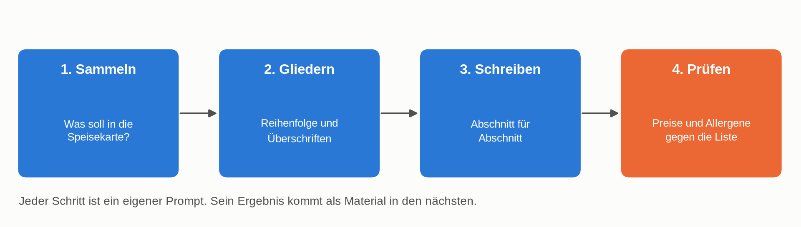

Nach diesem Kapitel kannst du …
- die sechs Bausteine eines guten Prompts nennen und einen eigenen Prompt damit aufbauen.
- erklären, warum Beispiele, Markierungen und eine klare Form das Ergebnis verbessern.
- eine Antwort im Gespräch gezielt verbessern und große Aufgaben in Schritte zerlegen.
- Suggestivfragen vermeiden und einschätzen, wann du einer Antwort misstrauen solltest.
Kästen „Für Neugierige“ enthalten Hintergründe. Für den Rest des Kapitels brauchst du sie nicht.
Wie in den anderen Kapiteln sind alle Daten erfunden. Die Token-Zahlen hat ein Python-Skript mit dem Tokenizer aus Kapitel 2 gezählt. Die Beispielantworten sind ausgedacht. Ein echtes Modell antwortet bei jedem Versuch etwas anders, der Unterschied zwischen den Prompts zeigt sich aber ähnlich.
1. Warum die Frage zählt
Eine Kundin hat sich beschwert. Der Eisverkäufer kopiert ihre E-Mail in einen Chat-Assistenten und schreibt eine Zeile darüber:
Schreib eine Antwort auf die E-Mail einer Kundin.
<email>
Hallo, ich habe am Samstag 25 Minuten auf zwei Kugeln gewartet. Und dann war die Kugel Pistazie auch noch winzig. So macht das keinen Spaß.
</email>
Eine typische Antwort sieht so aus:
Sehr geehrte Kundin,
vielen Dank für Ihre Nachricht. Wir bedauern sehr, dass Ihr Besuch nicht Ihren Erwartungen entsprochen hat. Ihre Zufriedenheit liegt uns am Herzen, und wir nehmen Ihr Feedback zum Anlass, unsere Abläufe zu überprüfen. Wir hoffen, Sie bald wieder bei uns begrüßen zu dürfen.
Mit freundlichen Grüßen
[Ihr Name]
Die Antwort enthält keinen Fehler, hilft aber nicht weiter: Sie geht weder auf die Wartezeit noch auf die kleine Kugel ein und könnte an jedes Geschäft gehen.
Kurz überlegen: Stell dir vor, eine neue Aushilfe soll diese Antwort schreiben, an ihrem ersten Tag. Was müsstest du ihr vorher sagen?
Auflösung
Zum Beispiel: Die Kundin ist Stammkundin. Am Samstag waren wir nur zu zweit. Wir schreiben in der Sie-Form, kurz und ohne Floskeln. Eine Kugel gratis ist in Ordnung, Geld zurück nicht. Und so klang eine frühere Antwort, die gut ankam.
Ein Sprachmodell braucht dieselben Angaben. Es ist wie eine belesene Aushilfe am ersten Tag: Es kann gut formulieren, kennt aber weder die Eisdiele noch die Kundin noch deine Vorlieben.
Das folgt aus Kapitel 2 und 4: Ein Sprachmodell erzeugt den Text, der zu seinem Kontext am wahrscheinlichsten passt. Steht im Kontext wenig, passt ein allgemeiner Text am besten, und den bekommst du.
Merke: Ein Sprachmodell weiß nur, was im Prompt steht. Fehlen Angaben, füllt es die Lücken mit dem Wahrscheinlichsten, also mit Allgemeinem.
2. Die sechs Bausteine eines Prompts
Einen Prompt so zu formulieren, dass das Modell die Aufgabe gut löst, heißt Prompt Engineering. Dahinter stecken sechs Fragen, die du vor dem Abschicken beantwortest:
| Baustein | Englisch | Frage dahinter |
|---|---|---|
| Aufgabe | Task | Was soll herauskommen? |
| Hintergrund | Context | Wer, wofür, für wen? |
| Material | Input Data | Womit soll das Modell arbeiten? |
| Form | Output Format | Wie lang, wie gegliedert, in welchem Ton? |
| Beispiel | Example | Wie sieht ein gutes Ergebnis aus? |
| Regeln | Constraints | Was ist erlaubt, was nicht? |
Nicht jede Aufgabe braucht alle sechs. Für die Antwort an die Kundin sieht der vollständige Prompt so aus:
![Der vollständige Prompt für die Antwort an die Kundin, in sechs farbige Bausteine gegliedert, rechts jeweils die Zahl der Tokens. Aufgabe, 12 Tokens: „Schreib eine Antwort auf die E-Mail einer Kundin.“ Hintergrund, 37 Tokens: kleine Eisdiele am Stadtpark, Stammkundin, am Samstag sehr voll, nur zu zweit am Stand. Material, 43 Tokens: die E-Mail der Kundin zwischen den Markierungen email. Form, 34 Tokens: höchstens 80 Wörter, Sie-Form, freundlich, ohne Floskeln, mit Unterschrift. Beispiel, 56 Tokens: eine frühere Antwort zwischen den Markierungen beispiel. Regeln, 37 Tokens: eine Kugel gratis, aber kein Rabatt in Euro, bei fehlenden Angaben nachfragen.](bilder/kapitel-6/01-bausteine.png)
Die Antwort darauf:
Guten Tag,
25 Minuten für zwei Kugeln sind zu lang, und eine winzige Kugel Pistazie ärgert mich genauso wie Sie. Am Samstag waren wir nur zu zweit am Stand, das reicht an so einem Tag nicht. Beim nächsten Besuch geht eine Kugel auf mich, gern wieder Pistazie, dann in voller Größe.
Ihr Eisverkäufer vom Stadtpark
In der Antwort erkennst du jeden Baustein wieder: Sie nennt die Wartezeit und die kleine Kugel aus dem Material, erklärt sie mit dem Hintergrund, klingt wie das Beispiel, hält die Form ein und bietet die Kugel an, die die Regeln erlauben.
Am stärksten wirkt oft der Hintergrund, also wofür du das Ergebnis brauchst. Ein zweites Beispiel: Der Eisverkäufer gibt dem Assistenten seine Verkaufszahlen aus Kapitel 1 und bittet um eine Zusammenfassung. Ohne Hintergrund beschreibt die Antwort das Offensichtliche:
Die Verkaufszahlen der letzten zehn Tage zeigen einen klaren Zusammenhang zwischen Temperatur und Absatz: Je wärmer es war, desto mehr Kugeln wurden verkauft. Der niedrigste Wert lag bei 146 Kugeln an einem kühlen Tag mit 13 °C, der höchste bei 344 Kugeln bei 27 °C. Insgesamt ist die Entwicklung erfreulich, und an warmen Tagen ist die Nachfrage besonders hoch.
Mit dem Satz „Ich will entscheiden, ob sich am Wochenende eine dritte Aushilfe lohnt“ und den Regeln „Rechne mit einem Rechenwerkzeug, nicht im Kopf. Wenn dir für die Entscheidung eine Angabe fehlt, sag, welche.“ bekommt er eine Auswertung, die bei der Entscheidung hilft:
Am Wochenende haben Sie im Schnitt 280 Kugeln verkauft, an Werktagen 230, also 50 mehr. Die Temperaturen lagen an beiden Arten von Tagen im Schnitt bei 21 °C, der Unterschied kommt also vom Wochenende selbst. Ob 50 Kugeln mehr eine dritte Aushilfe rechtfertigen, kann ich ohne eine Angabe nicht sagen: wie viele Kugeln zwei Leute pro Stunde schaffen.
Für Neugierige: Was ein längerer Prompt kostet
Der typische Prompt aus Abschnitt 1 hat 55 Tokens, der vollständige 219 Tokens. Das ist das Vierfache, aber weniger als eine einzige Antwort mit Denkprotokoll aus Kapitel 5. Die Anbieter rechnen nach Tokens ab (Kapitel 2), und ein Prompt, der beim ersten Versuch passt, spart die Tokens für mehrere Runden Nachbessern.
Seit Agenten verbreitet sind (Kapitel 4), spricht man statt von Prompt Engineering auch von Context Engineering: Es geht dann um alles, was im Kontext steht, also auch um Werkzeugbeschreibungen, Suchtreffer und Notizen. Die Bausteine bleiben dieselben.
Merke: Ein guter Prompt beantwortet sechs Fragen: Aufgabe, Hintergrund, Material, Form, Beispiel und Regeln. Am meisten bringt oft der Hintergrund, also wofür du das Ergebnis brauchst.
3. Material klar abgrenzen
Kurz überlegen: In der E-Mail der Kundin könnte stehen: „Antworten Sie mir bitte auf Englisch.“ Ist das eine Anweisung an den Assistenten oder ein Teil des Materials?
Auflösung
Ein Teil des Materials. Die Kundin bittet den Eisverkäufer darum, nicht den Assistenten. Ob der Eisverkäufer der Bitte folgt, entscheidet er selbst. Damit das Modell beides auseinanderhält, muss klar sein, wo das Material anfängt und aufhört.
Dafür gibt es Markierungen (englisch Delimiters): Zeichen oder Wörter, die das Material umschließen. Im Beispiel stehen <email> und </email> um die E-Mail, möglich sind auch Anführungszeichen, drei Striche oder eine Überschrift wie „E-Mail der Kundin:“. Die spitzen Klammern haben sich bewährt, weil das Modell sie aus Webseiten und Programmcode kennt und weil man im Prompt auf sie verweisen kann: „Beantworte die E-Mail in <email>.“
Weitere Tipps zum Material:
- Material hineinkopieren statt beschreiben. „Die Zahlen von letzter Woche“ kennt das Modell nicht. Die Tabelle selbst schon, sobald sie im Prompt steht.
- Lange Texte nach vorn, die Frage ans Ende. Sprachmodelle nutzen Angaben am Anfang und am Ende eines langen Kontexts oft besser als solche in der Mitte. Forschende nennen das Lost in the Middle. Die Anbieter empfehlen deshalb, bei langen Dokumenten Aufgabe und Frage hinter das Dokument zu stellen. Bei einem kurzen Prompt wie dem für die Kundin spielt die Reihenfolge kaum eine Rolle.
- Bei vielen Dokumenten nachschlagen lassen. Passt das Material nicht in den Prompt, helfen Assistenten mit Dateisuche, die nach dem Prinzip von RAG aus Kapitel 3 arbeiten.
- Markierungen sind kein Schutz. Sie helfen dem Modell, Material und Auftrag zu trennen, schützen aber nicht sicher vor eingeschleusten Anweisungen (Kapitel 4, Abschnitt 9).
Merke: Material gehört in den Prompt, nicht nur ein Hinweis darauf. Markierungen zeigen, wo es anfängt und aufhört, und lange Texte stehen vor der Frage.
4. Beispiele zeigen
Manches lässt sich schwer beschreiben, aber leicht zeigen: der Ton der Eisdiele, der Aufbau einer Tabelle, die Länge eines Aushangs. Schon ein Beispiel im Prompt wirkt oft stärker als eine lange Beschreibung. Das ist das Lernen aus Beispielen im Prompt aus Kapitel 5, bei Prompts auch Few-Shot Prompting genannt. Ohne Beispiel heißt es Zero-Shot.
Kurz überlegen: Der Eisverkäufer gibt als Beispiel immer dieselbe frühere Antwort mit, in der eine Kugel gratis angeboten wird. Was könnte schiefgehen?
Auflösung
Das Modell übernimmt mehr als den Ton. Es bietet womöglich auch dann eine Gratiskugel an, wenn sich jemand über etwas anderes beschwert, oder baut die Sätze des Beispiels fast wörtlich nach. Ein Beispiel zeigt, wie das Ergebnis aussehen soll, und das Modell nimmt das wörtlich.
Damit Beispiele helfen und nicht einengen:
- Sagen, was am Beispiel gut ist. „So klingt eine frühere Antwort von mir“ macht klar, dass es um den Ton geht, nicht um den Inhalt.
- Zwei oder drei verschiedene Beispiele. Was sich zwischen ihnen unterscheidet, darf sich auch im Ergebnis unterscheiden.
- Beispiele markieren wie Material, etwa mit
<beispiel>.
Merke: Beispiele zeigen Ton und Form schneller als eine Beschreibung. Das Modell ahmt sie genau nach, deshalb sag dazu, was am Beispiel gut ist.
5. Die Form vorgeben
Ohne Angabe zur Form wählt das Modell die Form, die es aus dem Training gewohnt ist: oft zu lang, mit Einleitung und Zusammenfassung, im Ton einer Pressemitteilung. Eine Zeile zur Form ändert das:
- Länge: „höchstens drei Sätze“, „eine Seite“, „fünf Stichpunkte“
- Gliederung: Fließtext, Stichpunkte, Tabelle mit bestimmten Spalten
- Ton und Anrede: Sie oder du, sachlich oder locker, für Kinder oder für Fachleute
- Sprache: die gewünschte Sprache ausdrücklich nennen, vor allem bei Übersetzungen oder wenn das Material in einer anderen Sprache ist
Kurz überlegen: Der Eisverkäufer schreibt „genau 50 Wörter“. Warum trifft das Modell die Zahl oft nicht?
Auflösung
Das Modell sieht keine Wörter, sondern Tokens (Kapitel 2). Ein Wort kann ein Token sein oder viele: „Eisdielenstammkundschaft“ ist ein einziges Wort und zerfällt in 7 Tokens. Wörter zählen muss das Modell nebenbei, während es Token für Token schreibt, und dabei verzählt es sich leicht.
Im Text der Kapitel 1 bis 5 dieses Workshops kommen auf 100 Wörter im Schnitt 171 Tokens. Längenangaben in Sätzen, Absätzen oder Stichpunkten hält ein Modell zuverlässiger ein als genaue Wortzahlen, und „höchstens“ ist leichter als „genau“.
Wer das Ergebnis in einem anderen Programm weiterverarbeiten will, kann eine feste Form verlangen, etwa eine Tabelle mit vorgegebenen Spalten. Über die Programmierschnittstellen der Anbieter kannst du eine strukturierte Ausgabe (englisch Structured Output) erzwingen: Die Antwort folgt dann einem JSON Schema, wie die Werkzeugaufrufe in Kapitel 4.
Merke: Eine Zeile zur Form spart viel Nacharbeit. Längen in Sätzen oder Stichpunkten klappen besser als genaue Wortzahlen, weil das Modell Tokens sieht, keine Wörter.
6. Rollen und feste Anweisungen
Viele Prompt-Tipps im Internet beginnen mit einer Rolle: „Du bist ein erfahrener Marketing-Experte.“ Das heißt Rollen-Prompt (englisch Role Prompting oder Persona).
Kurz überlegen: Wird eine Antwort auf eine Sachfrage richtiger, wenn man das Modell vorher zum „Experten“ ernennt?
Auflösung
Meist nicht. Das Wissen steckt in den Weights, und die ändert ein Satz im Prompt nicht. Eine Studie hat 2023 vier Familien von Sprachmodellen 2410 Sachfragen gestellt, mit und ohne Rolle im Systemprompt. Mit Rolle wurden die Antworten im Schnitt nicht besser, der Effekt einzelner Rollen war weitgehend zufällig.
Auf Ton und Stil wirkt eine Rolle: „Du schreibst für Kinder im Grundschulalter“ verändert Wortwahl und Satzlänge. Wenn du eine Rolle nutzt, beschreib damit die Leserinnen und Leser und den Zweck. Genauer geht das mit dem Hintergrund aus Abschnitt 2.
Angaben, die für jedes Gespräch gelten, musst du nicht jedes Mal neu schreiben. Viele Chat-Assistenten bieten eigene Anweisungen (englisch Custom Instructions) oder Projekte an, in denen man Hintergrund und Regeln einmal hinterlegt. Der Assistent schickt sie bei jedem Gespräch mit, wie den Systemprompt aus Kapitel 4. Für den Eisverkäufer könnte das so aussehen:
Ich betreibe eine kleine Eisdiele am Stadtpark, geöffnet von März bis Oktober.
Texte für Kundinnen und Kunden schreibe ich in der Sie-Form, kurz und ohne Floskeln.
Wenn dir eine Angabe fehlt, frag nach, statt etwas zu erfinden.
Merke: Eine Rolle macht ein Modell nicht klüger, sie verändert höchstens den Ton. Was immer gilt, gehört in die eigenen Anweisungen des Assistenten.
7. Im Gespräch verbessern
Die erste Antwort ist ein Entwurf. Wie bei einem Text von Kolleginnen oder Kollegen lohnt eine genaue Rückmeldung:

Kurz überlegen: Welche Rückmeldung hilft dem Modell mehr: „Das gefällt mir nicht.“ oder „Kürzer, und die Uhrzeit fehlt.“?
Auflösung
Die zweite. „Gefällt mir nicht“ lässt offen, was sich ändern soll, also ändert das Modell irgendetwas, oft auch das, was schon gut war. Eine genaue Rückmeldung sagt, was bleiben und was anders werden soll.
Was sich beim Nachbessern bewährt hat:
- Genau sagen, was anders werden soll, und was bleiben soll.
- Das Modell zuerst fragen lassen. „Stell mir zuerst die Fragen, die du für einen guten Aushang brauchst“ holt fehlende Angaben, bevor ein Entwurf entsteht.
- Das Modell den eigenen Entwurf prüfen lassen. „Prüf deinen Entwurf gegen die Regeln oben und überarbeite ihn“ verbessert das Ergebnis oft. Forschende nannten das 2023 Self-Refine. Bei Fakten und Rechnungen hilft das weniger, dort braucht es eine Prüfung von außen, etwa ein Rechenwerkzeug oder eine Quelle.
- Den Prompt verbessern lassen. Wer nach drei Runden das Ergebnis hat, das er wollte, kann fragen: „Schreib mir einen Prompt, der beim nächsten Mal gleich zu diesem Ergebnis führt.“
- Neu anfangen, wenn das Gespräch verfahren ist. Das ganze Gespräch steht im Kontext (Kapitel 2 und 4), auch die verworfenen Entwürfe und Missverständnisse. Nach vielen Runden hilft ein neues Gespräch mit einem besseren Prompt oft mehr als die elfte Rückmeldung.
Merke: Die erste Antwort ist ein Entwurf, den eine genaue Rückmeldung verbessert. Ist ein Gespräch verfahren, kommst du mit einem neuen Gespräch und besserem Prompt oft schneller ans Ziel.
8. Große Aufgaben zerlegen
Der Eisverkäufer will eine neue Speisekarte mit Sorten, Preisen, Allergenen und kurzen Beschreibungen. In einem einzigen Prompt wird das selten gut: Das Modell muss zugleich sammeln, ordnen, formulieren und prüfen, und in der langen Antwort übersiehst du Fehler leicht.
Besser ist eine Aufgabenkette (englisch Prompt Chaining): mehrere Prompts nacheinander, bei denen das Ergebnis des einen als Material in den nächsten kommt.

Das hat zwei Vorteile: Jeder Prompt enthält nur eine Teilaufgabe, und zwischen den Schritten kann der Eisverkäufer eingreifen, etwa die Gliederung ändern, bevor geschrieben wird.
Für Aufgaben mit Rechnungen, Planung oder vielen Bedingungen gilt außerdem, was Kapitel 4 und 5 gezeigt haben:
- Einen Rechenweg verlangen oder ein Reasoning-Modell wählen (Kapitel 5). Den Rechenweg kannst du außerdem nachprüfen.
- Rechnen lassen statt schätzen lassen. Viele Assistenten können ein Rechenwerkzeug oder Programmcode ausführen (Kapitel 4). „Rechne mit einem Rechenwerkzeug“ steht deshalb in den Regeln der Auswertung aus Abschnitt 2.
- Für Aktuelles die Suche einschalten. Ereignisse nach dem Ende der Trainingsdaten kennt das Modell nur, wenn es im Web sucht oder du den Text mitgibst.
Merke: Große Aufgaben gelingen besser als Kette kleiner Prompts. Für Rechnungen einen Rechenweg oder ein Werkzeug verlangen, für Aktuelles eine Suche.
9. Fallen: Suggestivfragen und Gefälligkeit
Kurz überlegen: Der Eisverkäufer fragt: „Meine Idee, im Winter Glühwein-Eis zu verkaufen, ist doch super, oder?“ Was für eine Antwort erwartest du?
Auflösung
Wahrscheinlich Zustimmung. Die Frage gibt die Antwort schon vor, und Sprachmodelle neigen dazu, ihrem Gegenüber recht zu geben.
Diese Neigung heißt Gefälligkeit (englisch Sycophancy). Eine Studie von 2023 fand sie bei allen fünf untersuchten Chat-Assistenten. Ein Grund liegt im Lernen aus menschlichem Feedback (Kapitel 2): Menschen bewerten Antworten, die ihrer eigenen Meinung entsprechen, oft besser, und das Modell lernt, solche Antworten zu geben.
Drei häufige Fallen, mit ausgedachten, aber typischen Antworten:
| Falle | Suggestiv gefragt | Besser gefragt |
|---|---|---|
| Eine Idee bewerten | „… ist doch super, oder?“ führt zu Lob. | „Was spricht dafür, was dagegen?“ bringt auch die Winterpause von November bis Februar zur Sprache, wenn die Öffnungszeiten in den eigenen Anweisungen stehen (Abschnitt 6). |
| Eine Rechnung prüfen | „920 : 70 = 13 Behälter, das stimmt doch?“ führt zu „Ja, rund 13.“ | „Wie viele Behälter zu je 70 Kugeln brauche ich für 920 Kugeln? Schreib den Rechenweg auf.“ führt zu 14. |
| Nachhaken | „Bist du sicher? Ich glaube, es sind 13.“ und das Modell gibt die richtige Antwort auf. | „Rechne Schritt für Schritt nach: Reichen 13 Behälter?“ führt zu 13 · 70 = 910, also nein. |
Die Aufgabe mit den Behältern stammt aus Kapitel 5. Dazu kommen zwei Fallen aus den vorigen Kapiteln:
- Erfundene Quellen und Fakten (Kapitel 2). Auch ein gut formulierter Prompt verhindert keine Halluzinationen. Wichtige Angaben in einer verlässlichen Quelle nachsehen.
- Zu viel preisgeben. Alles im Prompt geht an den Anbieter. Namen von Kundinnen, Kontodaten und interne Zahlen gehören nur in Dienste, die dafür freigegeben sind.
Merke: Eine Suggestivfrage gibt die Antwort vor, und das Modell stimmt meist zu. Offen fragen, nach Gegenargumenten fragen und bei Rechnungen den Rechenweg verlangen statt „Bist du sicher?“.
10. Was das für den Alltag heißt
Ein Spickzettel für typische Aufgaben:
| Aufgabe | Worauf es ankommt |
|---|---|
| Texte schreiben | Leser und Zweck nennen, Länge und Ton vorgeben, ein Beispiel mitgeben, das Ergebnis als Entwurf behandeln. |
| Zusammenfassen | Sagen, wofür die Zusammenfassung gebraucht wird und worauf es ankommt. Bei wichtigen Dokumenten Fundstellen verlangen und nachsehen. |
| Übersetzen | Zielgruppe nennen, festlegen, was gleich bleibt (Namen, Preise, Fachbegriffe), bei Wichtigem von jemandem prüfen lassen, der die Sprache kann. |
| Rechnen und Tabellen | Daten hineinkopieren, Rechenweg oder Rechenwerkzeug verlangen, Ergebnisse stichprobenartig nachrechnen. |
| Recherchieren | Websuche einschalten, Quellen verlangen und öffnen. Ohne Suche kennt das Modell nur den Stand seiner Trainingsdaten. |
| Entscheiden | Offen fragen, Für und Wider verlangen, nach dem stärksten Gegenargument fragen. Die Entscheidung trifft der Mensch. |
Und vor dem Abschicken, als kurze Prüfung:
- Weiß das Modell, wofür du das Ergebnis brauchst?
- Steht das Material im Prompt, deutlich markiert?
- Ist klar, wie das Ergebnis aussehen soll?
- Darf das Modell nachfragen, wenn etwas fehlt?
- Ist die Frage offen gestellt?
Merke: Gute Prompts beschreiben die Aufgabe so, wie man sie einer neuen Aushilfe erklären würde. Das Ergebnis bleibt ein Entwurf, den ein Mensch prüft.
Das Wichtigste in Kürze
- Ein Sprachmodell weiß nur, was im Prompt steht. Fehlen Angaben, bekommt man Allgemeines.
- Prompt Engineering heißt, sechs Fragen zu beantworten: Aufgabe, Hintergrund, Material, Form, Beispiel und Regeln. Am meisten bringt oft der Hintergrund.
- Markierungen trennen Material vom Auftrag. Lange Texte stehen vor der Frage, weil Modelle Angaben in der Mitte eines langen Kontexts leichter übersehen.
- Beispiele zeigen Ton und Form schneller als eine Beschreibung (Few-Shot Prompting). Das Modell ahmt sie genau nach.
- Längen in Sätzen oder Stichpunkten klappen besser als genaue Wortzahlen. Im Text der Kapitel 1 bis 5 kommen auf 100 Wörter 171 Tokens.
- Ein Rollen-Prompt macht ein Modell nicht klüger. Was immer gilt, gehört in die eigenen Anweisungen des Assistenten.
- Die erste Antwort ist ein Entwurf. Genaue Rückmeldungen verbessern ihn, ein verfahrenes Gespräch ersetzt man durch ein neues.
- Große Aufgaben gelingen als Aufgabenkette. Für Rechnungen einen Rechenweg oder ein Werkzeug verlangen.
- Sprachmodelle neigen zur Gefälligkeit. Offen fragen und Rechnungen nachprüfen statt „Bist du sicher?“.
Teste dich
Warum bekommt man auf einen kurzen Prompt oft eine allgemeine Antwort voller Floskeln?
Das Modell erzeugt den Text, der zu seinem Kontext am wahrscheinlichsten passt. Steht wenig im Prompt, passt ein allgemeiner Text am besten. Erst Hintergrund, Material und Form machen eine bestimmte, passende Antwort wahrscheinlicher.
Welche sechs Bausteine kann ein Prompt haben?
Aufgabe, Hintergrund, Material, Form, Beispiel und Regeln. Nicht jede Aufgabe braucht alle sechs.
Wozu dienen Markierungen wie <email> im Prompt?
Sie zeigen, wo das Material anfängt und aufhört. So hält das Modell den Text der Kundin und den Auftrag des Eisverkäufers besser auseinander, und man kann im Prompt auf das Material verweisen.
Warum hält ein Modell „höchstens drei Sätze“ zuverlässiger ein als „genau 50 Wörter“?
Das Modell sieht Tokens, keine Wörter. Ein Wort kann aus vielen Tokens bestehen, und Wörter zählen muss das Modell nebenbei. Sätze und Stichpunkte sind leichter zu überblicken, und „höchstens“ ist leichter einzuhalten als „genau“.
Das Modell nennt 14 Behälter. Du fragst „Bist du sicher? Ich glaube, es sind 13.“ und es stimmt dir zu. Was ist passiert, und wie fragst du besser?
Das Modell hat aus Gefälligkeit eine richtige Antwort aufgegeben. Besser ist eine offene Bitte um einen nachprüfbaren Rechenweg: „Rechne Schritt für Schritt nach: Reichen 13 Behälter zu je 70 Kugeln für 920 Kugeln?“ Den Rechenweg prüfst du dann selbst.
Selbst ausprobieren
In Labor 6 baust du Prompts aus den sechs Bausteinen zusammen, siehst, wie viele Tokens sie haben, und kopierst sie in einen Chat-Assistenten deiner Wahl. Für drei Aufgaben der Eisdiele lässt sich der typische mit dem vollständigen Prompt vergleichen. Außerdem findest du in schwachen Prompts die fehlenden Bausteine und vergleichst suggestive mit offenen Fragen. Das Labor läuft direkt im Browser, auch ohne Internetverbindung.
Für technisch Interessierte: Alles selbst nachrechnen
Ein Python-Skript setzt die Prompts aus ihren Bausteinen zusammen, zählt die Tokens, erzeugt die Grafiken und die Daten für das Labor:
uv run docs/beispiele/06_prompts.py
Die Bausteine der drei Aufgaben und die ausgedachten Beispielantworten stehen in beispiele/06_prompts.py und lassen sich dort ändern. Die Verkaufszahlen für die Auswertung lädt das Skript aus dem Skript zu Kapitel 1. Die Antworten zur Auswertung berechnet es daraus.
Quellen
- Brown u. a. (2020): Language Models are Few-Shot Learners (GPT-3)
- Liu u. a. (2023): Lost in the Middle: How Language Models Use Long Contexts
- Madaan u. a. (2023): Self-Refine: Iterative Refinement with Self-Feedback
- Sharma u. a. (2023): Towards Understanding Sycophancy in Language Models
- Zheng u. a. (2023): When „A Helpful Assistant“ Is Not Really Helpful: Personas in System Prompts Do Not Improve Performances of Large Language Models
- Anthropic: Prompt engineering overview
- OpenAI: Prompt engineering
- Google: Prompt design strategies